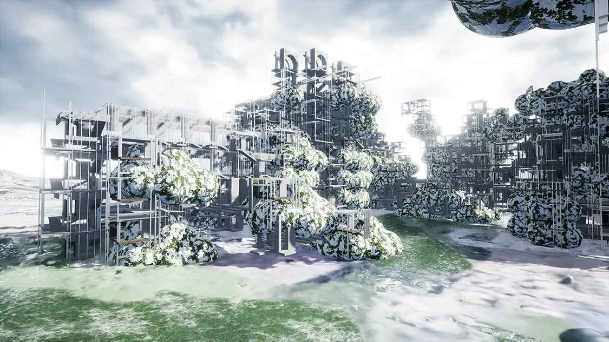
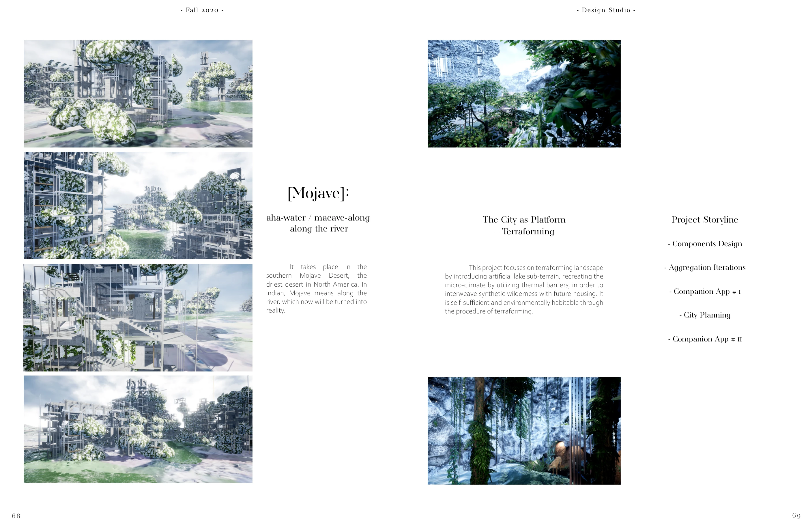
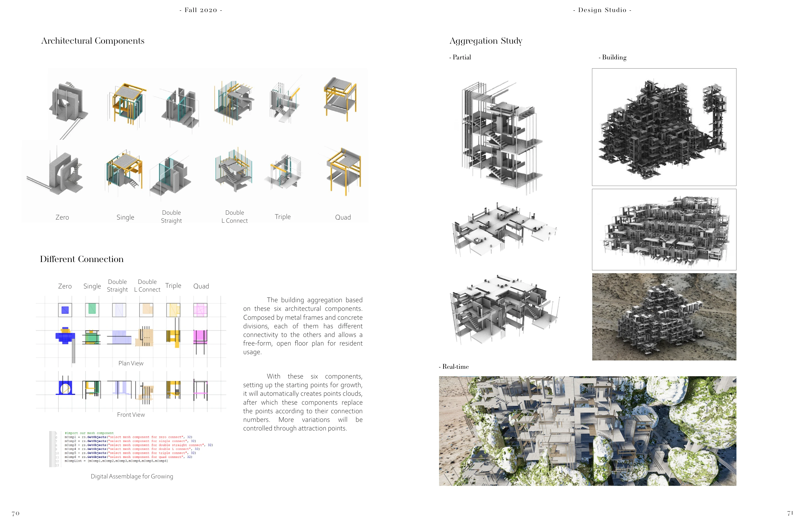
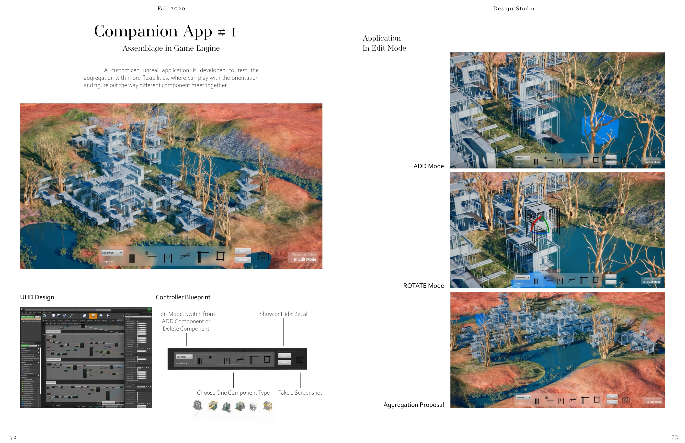
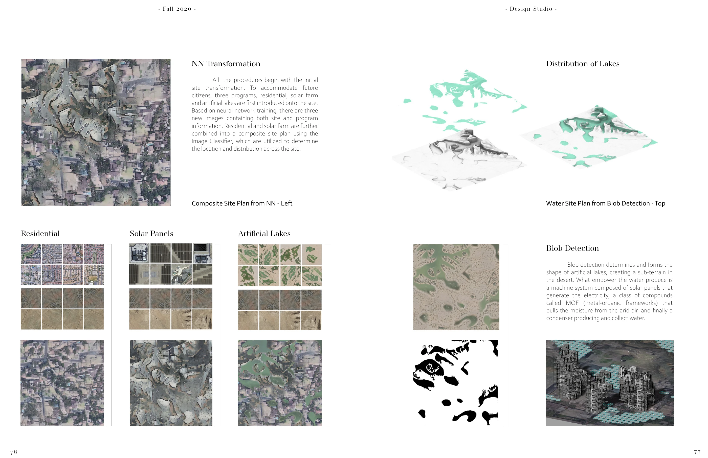
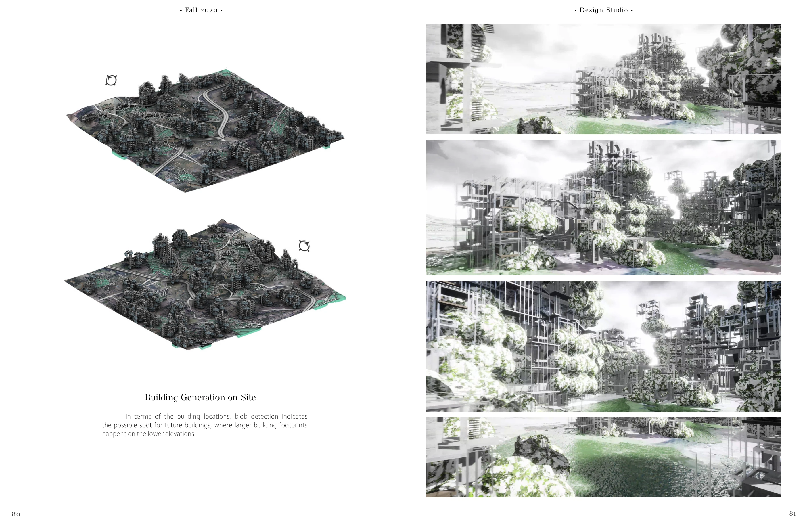
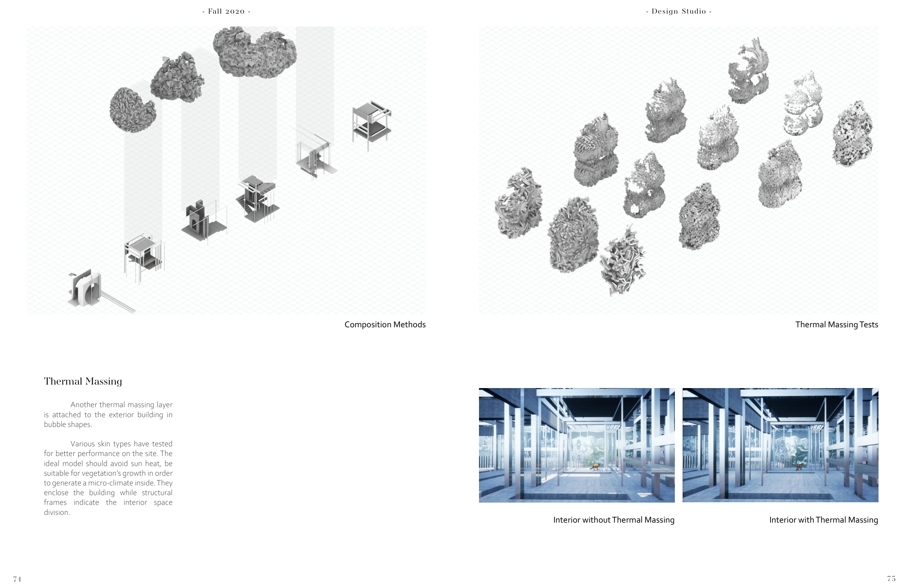
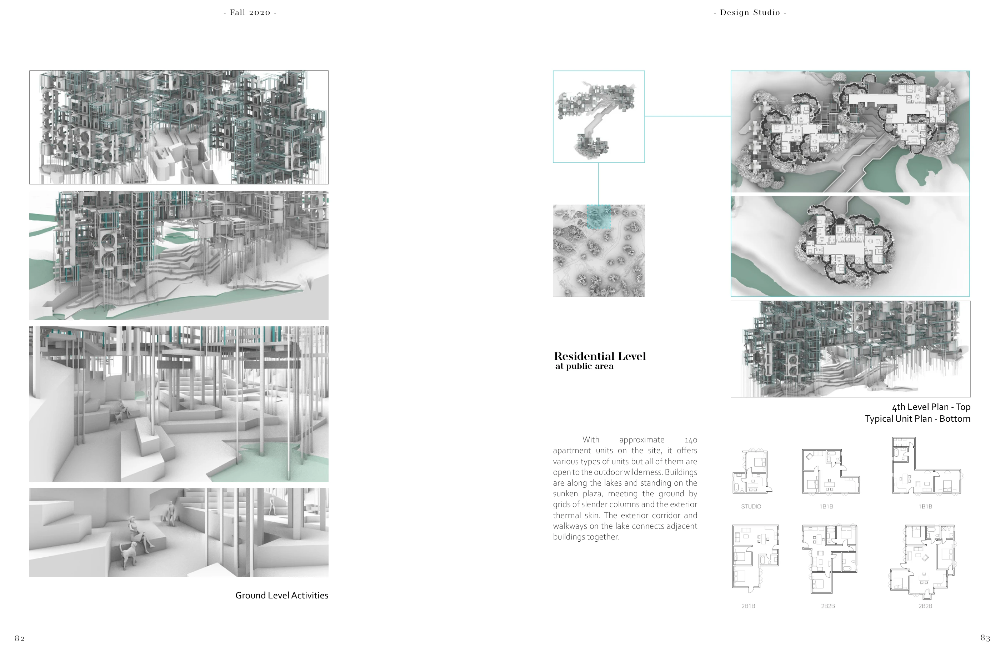
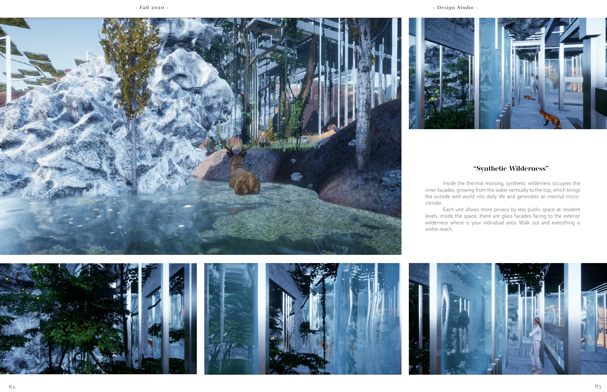

Mojave
A speculative desert city developed through component systems, neural-network site studies, and a custom Unreal application for assembling architecture.
Individual work · SCI-Arc, Fall 2020 · Instructor: M. Casey Rehm
Rhino · Python · Unreal Engine · Neural networks · Processing

A city as a platform
The proposal brings housing, artificial lakes, solar infrastructure, and planted thermal enclosures into one imagined landscape. The project moves between designing the city and building tools to explore it.

Components become a design tool
Six architectural components are organized by their connections. Growth points and attraction points guide their aggregation. A custom Unreal application makes this system editable: add, delete, rotate, change components, toggle the site decal, and capture a view.


From image to site
Neural-network studies combine site imagery with residential, solar, and water programs. Image classification and blob detection help translate the images into distributions and locations across the terrain.


Inside the synthetic wilderness
Thermal enclosure studies, residential plans, and interior views explore how the larger system becomes an inhabitable environment. These are design proposals, rather than measured environmental-performance results.




A film excerpt.
A selected sequence from the project.